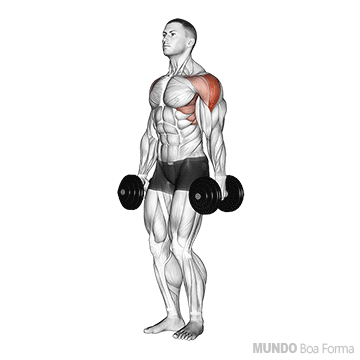

Agachamento Livre com Barra
Trabalhe quadríceps, glúteos e core com um exercício completo.
- Coloque a barra nos ombros e segure com firmeza.
- Flexione os joelhos, abaixando-se até 90 graus.
- Retorne à posição inicial, contraindo os glúteos.
Supino Inclinado com Halteres
Foque no peitoral superior com este clássico exercício.
- Deite em um banco inclinado e segure os halteres.
- Estenda os braços para cima, alinhados ao peito.
- Baixe lentamente os halteres até a altura dos ombros.

Remada Curvada com Barra
Fortaleça as costas e os bíceps com a remada curvada.
- Segure a barra com as palmas voltadas para você.
- Flexione ligeiramente os joelhos e incline-se para frente.
- Puxe a barra em direção ao abdômen e volte lentamente.

Cadeira Abdutora
Tonifique os glúteos e os abdutores da coxa.
- Posicione-se na máquina abdutora.
- Empurre as almofadas para fora, contraindo os glúteos.
- Volte lentamente à posição inicial.

Elevação Lateral com Halteres
Desenvolva os ombros com elevações laterais.
- Segure um haltere em cada mão, ao lado do corpo.
- Eleve os braços lateralmente até a altura dos ombros.
- Volte lentamente à posição inicial.

Flexão com Carga
Adicione intensidade às flexões com pesos.
- Coloque um colete de peso ou uma anilha nas costas.
- Realize a flexão, mantendo o corpo alinhado.
- Suba controladamente à posição inicial.

Stiff com Halteres
Trabalhe posteriores da coxa e glúteos com o stiff.
- Segure halteres nas mãos, com os pés afastados.
- Incline-se para frente, mantendo a coluna reta.
- Retorne à posição inicial, contraindo os glúteos.
Rosca Martelo com Halteres
Fortaleça os bíceps e antebraços.
- Segure os halteres com as palmas voltadas para o corpo.
- Flexione os cotovelos, trazendo os halteres até os ombros.
- Volte lentamente à posição inicial.